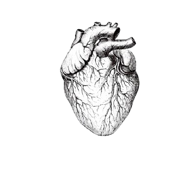
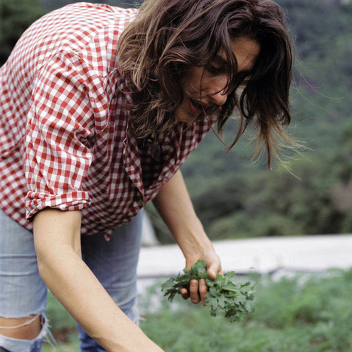
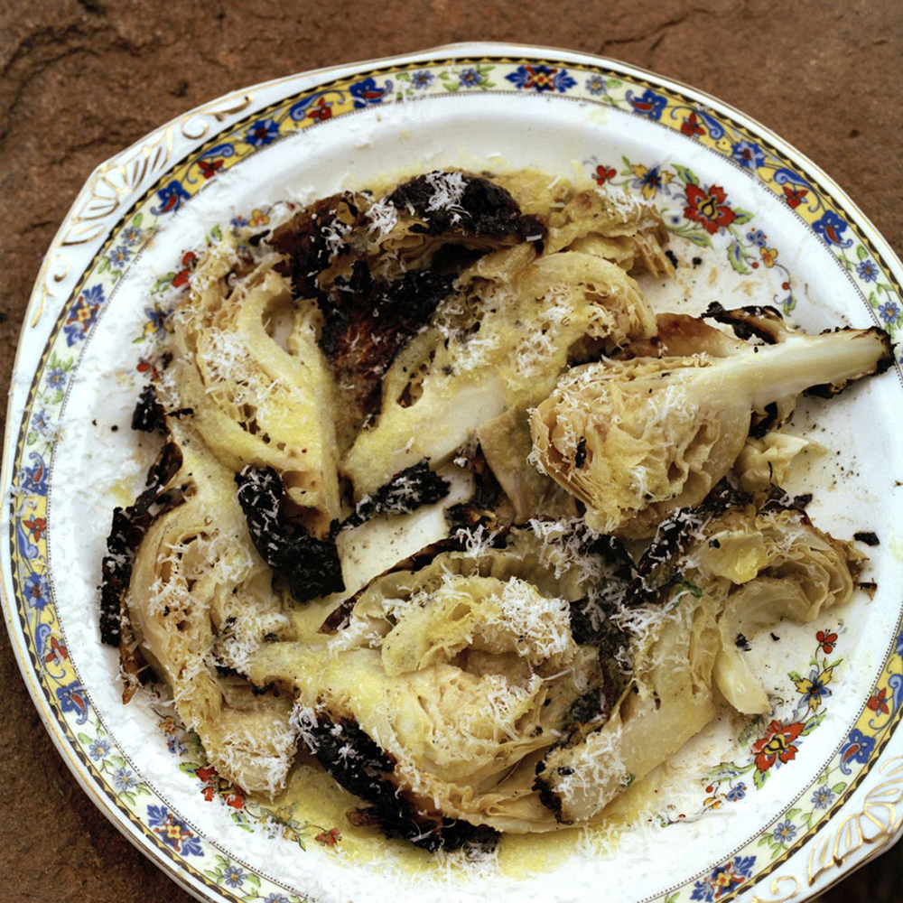
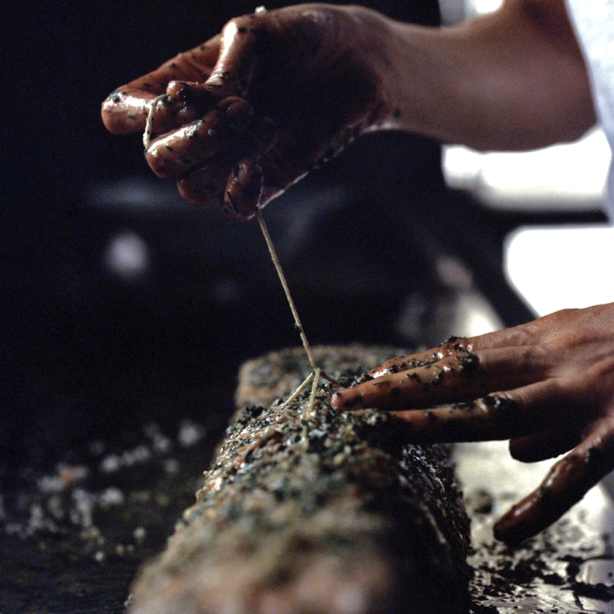

Paola Carosella
Cozinheira | Chef de Cozinha

.jpeg)
.jpeg)

Sou cozinheira. Nasci na Argentina em 1972, numa família de imigrantes
italianos, onde as mulheres ainda plantavam, colhiam e cozinhavam
intensamente. A cozinha sempre foi e continua sendo o meu lugar
preferido da casa, do mundo inteiro. Após terminar o colegial, em
1992, comecei a trabalhar em cozinhas de restaurantes. Assim foi e
continua sendo. É o que eu faço, o que amo e o que me dá alguma
certeza, o que entendo, o que me acalma. Eu acredito: Nos
ingredientes: Frescos, de boa procedência, naturais, bem criados,
simples, nobres (é melhor pouco de algo muito bom, que muito de algo
mais ou menos) Numa mão suave e delicada, mas firme e bem
intencionada. No respeito: pelo ingrediente, pelo colega, pelo fogo,
pelo cliente, pelo agricultor, pelo pescador, pelo lixeiro, pela
natureza. Na constância: todos os dias, a mesma coisa, dia após dia,
sem reclamar. Na paciência, saber esperar, muitas coisas na cozinha
demoram muitas horas, muitos dias, muitos meses para ficarem prontas.
Assim como na vida... tudo tem seu tempo. Na coerência: respeito as
nossas raízes, ao lugar, ao clima, ao momento. Na humildade: O prato é
quem fala, não é o cozinheiro. No desejo. Por que sem desejo não
atravessamos nem a rua.
Experiência
Comecei em Buenos Aires, onde trabalhei com grandes cozinheiros como
Paul Azema e Francis Mallmann, viajei para Paris e trabalhei em
lugares como Le Grand Vefour, Le Celadon e Le Bristol. Na California
trabalhei no Zuni Café; no Uruguai, no Los Negros; no 1884 em Mendoza,
Argentina, no Patagonia Sur, em Buenos Aires, no Patagonia West em
Nova Iorque, entre outras viagens e lugares. Em 2001 cheguei a São
Paulo para abrir e dirigir a cozinha do Figueira Rubaiyat junto a
Francis Mallmann e Belarmino Fernandes Iglesias.
- 2003 | Julia Cocina
- Uma homenagem a Julia Child: um restaurante pequeno com a cozinha aberta para o salão, com um cardápio minúsculo que mudava quase todo dia e que me deu enorme prazer, muitas dores, muito aprendizado e vários prêmios.
- 2008 | Arturito
- Um restaurante de cozinha simples, feita com os melhores ingredientes disponíveis na cidade, com foco na cozinha clássica mediterrânea mas também misturando as minhas raízes, origens e desejos. Coisas que penso, vejo, como, o que meu coração sente vontade e o meu talento tem alcance.
- 2014 | La Guapa
- Abri junto com meu sócio Benny Goldenberg o La Guapa Empanadas Artesanais e Café, um pequeno café de empanadas e doces latinos artesanais.
Portfólio


Especializações
Cozinha Italiana
85%
Cozinha Argentina
90%
Cozinha Brasileira
75%/